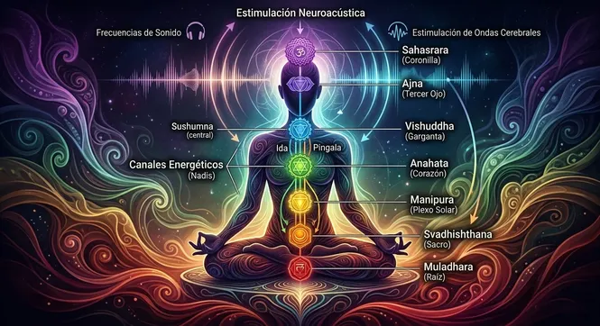

¿Sientes que trabajas sin descanso pero el dinero parece esfumarse de tus manos en cuanto llega? ¿Te despiertas con un peso denso en el pecho, sin motivación y con la vaga sensación de que tus proyectos sufren un freno invisible? Buscar desesperadamente como alinear los chackras no es una moda superficial ni un lujo místico; es la respuesta biológica y energética urgente a un sistema nervioso sobrecargado. Cuando tus vórtices vibracionales están bloqueados por memorias de estrés, trauma o sobrepensamiento, toda la abundancia que intentas atraer choca contra un muro invisible.
Aprender como alinear los chakras en casa de manera efectiva requiere ir más allá de encender un incienso o sentarse con las piernas cruzadas a repetir mantras que tu mente analítica rechaza. Los siete chakras no son símbolos decorativos; representan la intersección exacta entre las redes neuronales primarias, las glándulas endocrinas y la frecuencia magnética de tu cuerpo. Si la señal vibracional de tu columna está distorsionada por impulsos de pánico o escasez, tu realidad material reflejará exactamente ese mismo desorden. Para entender cómo funciona esta matriz de manifestación, conviene recordar que es la ley de atraccion y por qué la vibración del cuerpo dicta los resultados exteriores.
¿Qué Significa Realmente Alinear los Chakras y Por Qué Se Bloquean?
Los chakras son centros de transformación bioenergética distribuidos a lo largo del eje espinal. Cada uno gobierna funciones emocionales, físicas y espirituales concretas:
- Chakra Raíz (Muladhara): Tu sentido de supervivencia, seguridad financiera y pertenencia. Cuando está bloqueado, sientes angustia económica y miedo constante al futuro.
- Chakra Sacro (Svadhisthana): La chispa de la creatividad, el placer y las relaciones apasionadas. Su bloqueo genera culpa, frialdad afectiva y sequedad creativa.
- Chakra del Plexo Solar (Manipura): El centro de tu poder personal y autoestima. El desequilibrio se traduce en indecisión, timidez o necesidad compulsiva de control.
- Chakra del Corazón (Anahata): La puerta de la compasión y el amor incondicional. Un dolor de traición pasado crea un caparazón de amargura que impide recibir afecto sincero.
- Chakra de la Garganta (Vishuddha): Tu capacidad de expresar tu verdad y poner límites claros. Bloqueado, produce nudos en el cuello, pánico escénico o represión verbal.
- Chakra del Tercer Ojo (Ajna): La intuición brillante y la visión clara. La sobrecarga analítica apaga este vórtice, dejando espacio a la confusión y la falta de rumbo.
- Chakra Corona (Sahasrara): Tu conexión con la sabiduría universal y el propósito supremo. El bloqueo se percibe como vacío existencial o aislamiento espiritual.
Cuando la vida cotidiana te somete a tensiones prolongadas, las hormonas de estrés colapsan el flujo natural entre estos vórtices. En consecuencia, la energía se estanca en los centros inferiores de supervivencia, imposibilitando elevar la frecuencia para la manifestación.
Los 7 Síntomas Inconfundibles de que Tus Chakras Están Desalineados
Antes de buscar un método de limpiar chakras con sonido, examina si estás experimentando varios de los siguientes sintomas de chakras bloqueados en tu día a día:
- 1. Fatiga Crónica Desesperante: Levantarte exhausto sin importar cuántas horas hayas pasado en la cama.
- 2. Bloqueos Monetarios Repetitivos: Oportunidades de ingresos que se caen a último momento de forma insólita.
- 3. Ansiedad de Pecho y Estómago: Sensación física de nudo o fuego en la boca del estómago que no cede con nada.
- 4. Bucle de Rumiación Obsesiva: Incapacidad radical para pausar la mente, repasando problemas una y otra vez.
- 5. Inestabilidad Emocional Repentina: Pasar del llanto a la irritabilidad sin un detonante claro.
- 6. Pérdida del Atractivo y la Pasión: Sentirte apagado, invisible ante los demás y sin vitalidad sexual o creativa.
- 7. Niebla Mental e Intuición Anulada: Tomar decisiones desacertadas sistemáticamente por no "escuchar" tu instinto.
Tratar de alinear los chakras forzando la mente a quedarse "en blanco" durante meditaciones agotadoras suele ser frustrante. Si tu sistema nervioso está inundado de cortisol, exigirle concentración a la mente es como intentar calmar un incendio arrojando gasolina. Para que los chakras se abran de par en par, el cuerpo debe entrar primero en una relajación fisiológica profunda e involuntaria.
La Explicación Neurobiológica: El Papel de las Ondas Cerebrales y la Resonancia
Para la ciencia moderna, el estado de alineación energética corresponde a una sincronización precisa en la corteza auditiva y en la red electroencefálica. Cuando el cerebro produce Ondas cerebrales en los rangos Alfa y Theta ($4\text{ Hz} - 12\text{ Hz}$), el cuerpo reduce la producción de Adrenalina y activa los mecanismos de regeneración autocurativa.
En este estado de coherencia, el campo electromagnético del corazón se expande y entra en armonía con las frecuencias cerebrales. Esta concordancia somática es la que libera la tensión atrapada en los tejidos endocrinos vinculados a cada chakra. Si estás atravesando episodios de hipervigilancia, aprender como aliviar la ansiedad rapidamente sin medicamentos es el primer paso biológico para restablecer el flujo energético en la columna vertebral.
¿Cansado de Sentirte Agotado y con la Energía Bloqueada?
No pierdas semanas intentando meditaciones complejas que solo te dejan más estresado. Descubre cómo la estimulación neuroacústica pura de QuantumAudio® arrastra a tu cerebro pasivamente a estados Theta en minutos, alineando tus centros energéticos de forma automática desde la primera escucha.
ALINEAR MIS CHAKRAS AHORA MISMOEl Engañoso Mundo de YouTube: Por Qué los Audios Comprimidos Destruyen Tu Resonancia
Cuando las personas buscan en plataformas gratuitas frecuencias para desbloquear chakras o audios binaurales para meditar, la gran mayoría reporta dolor de cabeza, irritabilidad o nulos resultados tras semanas de uso. La causa de este fracaso masivo radica en una trampa tecnológica poco difundida: la compresión digital de audio.
Plataformas como YouTube o Spotify comprimen sus archivos mediante formatos como MP3 u Ogg Vorbis para ahorrar espacio de servidor. En este recorte violento, los algoritmos eliminan los microtonos binaurales, las fases Armónicas Nikola Tesla 3-6-9 y las ondas infrasonoras sutiles que necesita el cerebro humano para desencadenar el Arrastre de Ondas Cerebrales (Brainwave Entrainment).
El resultado es desgarrador: el cerebro percibe un sonido mutilado y sintético. En lugar de relajarse, la mente analítica lucha contra el artefacto sonoro, aumentando el estrés subconsciente. Para comprender en detalle este desfase técnico, puedes revisar por que los audios de youtube para insomnio no funcionan ni logran una verdadera reconfiguración energética.
| Criterio de Evaluación | Audios Comprimidos (YouTube / MP3) | QuantumAudio® WAV Máster 24-Bit |
|---|---|---|
| Espectro de Frecuencia Sonoro | Recortado; microtonos y armónicos destruidos | Espectro Puro HD (24-Bit / 96 kHz reales sin pérdidas) |
| Respuesta del Cerebro (FFR) | Inestable o nula; produce fatiga neuronal | Sincronización hemisférica completa garantizada |
| Nivel de Esfuerzo Usuario | Alto; intentar concentrarse durante 45 min | 100% Pasivo; solo ponte audífonos y recuéstate |
| Efecto en los Chakras | Superficial o mero efecto placebo (~5%) | Alineación somática profunda e inmediata |
La Solución Definitiva: Alineación Pasiva con la Neuroacústica de QuantumAudio®
QuantumAudio® no es una colección de música relajante de spa ni una pista de sonidos ambientales comunes. Es un activo de neuroestimulación acústica de máxima fidelidad diseñado físicamente para cruzar el factor crítico del cerebro y liberar los estancamientos energéticos del subconsciente.
Al ser suministrado en formato WAV Máster de 24 bits puro, el estímulo impacta los nervios auditivos transmitiendo pulsos estéreo calibrados con precisión matemática. Tu sistema nervioso se sincroniza sin resistencia, permitiendo que la kundalini y la fuerza vital fluyan libremente a través de los siete chakras.
- Alineación de Base a Corona: Sintoniza secuencialmente la resonancia de cada centro vibracional, liberando los nudos emocionales retenidos en el cuerpo.
- Desactivación del Cortisol en Minutos: Estimula al sistema nervioso parasimpático para que libere neurotransmisores de bienestar (endorfinas y GABA), derritiendo la rigidez física.
- Manifestación sin Esfuerzo: Al situar tu mente en la banda de frecuencia Theta, tu canal electromagnético se convierte en un imán potente para sincronías positivas y abundancia.
"Había probado reiki, cristales y meditaciones guiadas sin ver cambios duraderos en mi estancamiento financiero y personal. Un amigo me recomendó QuantumAudio®. La primera noche que me puse los audífonos sentí una vibración caliente en la base de la columna que subió hasta la cabeza en menos de 10 minutos. Es difícil de explicar con palabras, pero me desperté sintiéndome libre, liviana y con una claridad mental brutal. A los tres días cerré un negocio que llevaba estancado medio año. Es oro puro."
Empresaria / Practicante de Biohacking Energético
Recupera Tu Poder, Tu Claridad y Tu Flujo de Abundancia Hoy
No sigas malgastando tu vitalidad intentando resolver bloqueos energéticos profundos con métodos agotadores. Experimenta el impacto de la neuroacústica avanzada de QuantumAudio® en su versión pura WAV 24-Bit y reconéctate con tu estado natural de plenitud.
OBTENER QUANTUMAUDIO® AHORA MISMOPasos Prácticos para Alinear los Chakras en Casa esta Misma Noche
Acompaña tu sesión de estimulación neuroacústica pasiva con este protocolo sencillo de purificación energética al terminar el día:
- 1. Prepara un Entorno Libre de Distracciones: Apaga luces estridentes y coloca tu teléfono en modo "No Molestar". Tu amígdala necesita entender que el entorno es seguro.
- 2. Usa Auriculares de Buena Fidelidad: La sincronización hemisférica requiere canales estéreo totalmente independientes para enviar la microdiferencia de frecuencia a cada oído.
- 3. Adopta una Postura Receptiva: Recuéstate boca arriba en la cama o en una alfombra con los brazos acostados a los lados y las palmas mirando hacia arriba.
- 4. Pulsa Play y Suelta el Control: No intentes visualizar ni concentrarte activamente. Deja que las ondas WAV Máster 24-Bit reconfiguren la vibración de tus centros energéticos de manera automatizada.
Preguntas Frecuentes sobre la Alineación de Chakras
Continuar arrastrando el peso de chakras desalineados es una elección opcional en la era de la neuroacústica. Tu cuerpo está diseñado para fluir en abundancia, paz y salud perfecta. Al entregarle a tu sistema nervioso la frecuencia exacta para liberar las memorias de tensión, el estancamiento desaparece, la claridad renace y la manifestación de tus deseos más profundos se convierte en una consecuencia física natural.